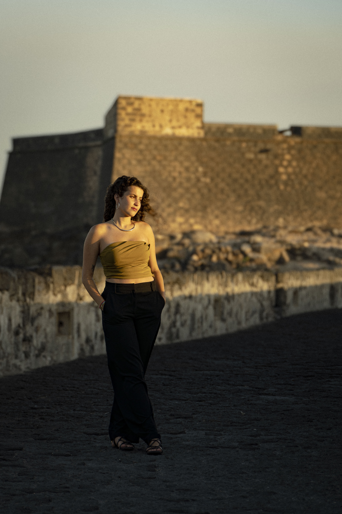

Fotografía · Multimedia Artist
Fotografía para
historias reales
Soy Carlota, fotógrafa y multimedia artist en Valencia. Trabajo fotografía editorial, corporativa, de producto, eventos, paisajes y campañas, creando imágenes adaptadas a cada proyecto y a aquello que el cliente quiere comunicar.
Base
Valencia / Lanzarote
Desde
2026
